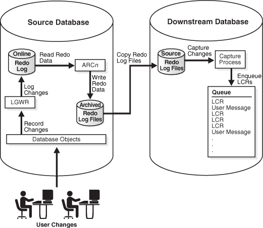

2 Oracle Streams Information Capture
Capturing information with Oracle Streams means creating a message that contains the information and enqueuing the message into a queue. The captured information can describe a database change, or it can be any other type of information.
The following topics contain conceptual information about capturing information with Oracle Streams:
See Also:
-
Oracle Streams Replication Administrator's Guide for information about configuring implicit capture
2.1 Ways to Capture Information with Oracle Streams
There are two ways to capture information with Oracle Streams: implicit capture and explicit capture.
2.1.1 Implicit Capture
With implicit capture, data definition language (DDL) and data manipulation language (DML) changes are captured automatically either by a capture process or by synchronous capture. A specific type of message called logical change record (LCR) describes these database changes. Both a capture process and synchronous capture can filter database changes with user-defined rules. Therefore, only changes to specified objects are captured.
The following topics describe capture processes and synchronous captures:
2.1.1.1 Capture Processes
A capture process retrieves change data from the redo log, either by mining the online redo log or, if necessary, by mining archived log files. After retrieving the data, the capture process formats it into an LCR and enqueues it for further processing.
A capture process enqueues information about database changes in the form of messages containing LCRs. A message containing an LCR that was originally captured and enqueued by a capture process is called a captured LCR. A capture process always enqueues messages into a buffered queue. A buffered queue is the portion of a queue that uses the Oracle Streams pool to store messages in memory and a queue table to store messages that have spilled from memory.
A capture process is useful in the following situations:
-
When you want to capture changes to a relatively large number of tables
-
When you want to capture changes to schemas or to an entire database
-
When you want to capture DDL changes
-
When you want to capture changes at a database other than the source database using downstream capture
2.1.1.2 Synchronous Captures
Synchronous capture uses an internal mechanism to capture DML changes immediately after they happen. Synchronous capture enqueues information about DML changes in the form of messages containing row LCRs. Synchronous capture enqueues these LCRs into a persistent queue. Synchronous capture always enqueues messages into a persistent queue. A persistent queue is the portion of a queue that only stores messages on hard disk in a queue table, not in memory. The messages captured by a synchronous capture are persistent LCRs.
Synchronous capture is useful in the following situations:
-
For the best performance, when you want to capture DML changes to a relatively small number of tables
-
When you want to capture DML changes to a table immediately after these changes are made
See Also:
2.1.2 Explicit Capture
With explicit capture, applications generate messages and enqueue them. These messages can be formatted as LCRs, or they can be formatted into different types of messages for consumption by other applications. Messages can also be enqueued explicitly by an apply process or by an apply handler for an apply process.
Explicit capture is useful in the following situations:
-
When applications generate messages that must be processed by other applications.
-
When you have a heterogeneous replication environment in which an apply process in an Oracle database applies changes that originated at a non-Oracle database. In this case, an application captures LCRs based on the changes at the non-Oracle database, and these LCRs are processed by an apply process at an Oracle database.
See Also:
-
Oracle Streams Replication Administrator's Guide for more information about heterogeneous information sharing with Oracle Streams
2.2 Types of Information Captured with Oracle Streams
The following types of information can be captured with Oracle Streams:
2.2.1 Logical Change Records (LCRs)
An LCR is a message with a specific format that describes a database change. There are two types of LCRs: row LCRs and DDL LCRs. A capture process, a synchronous capture, or an application can capture LCRs.
You can capture the following types of LCRs with Oracle Streams:
-
A captured LCR is an LCR that is captured implicitly by a capture process and enqueued into the buffered queue portion of an ANYDATA queue.
-
A persistent LCR is an LCR that is enqueued into the persistent queue portion of an
ANYDATAqueue. A persistent LCR can be enqueued in one of the following ways:-
Captured implicitly by a synchronous capture and enqueued
-
Constructed explicitly by an application and enqueued
-
Dequeued by an apply process and enqueued by the same apply process using the
SET_ENQUEUE_DESTINATIONprocedure in theDBMS_APPLY_ADMpackage
The only difference between the persistent LCRs captured in these three ways is that persistent LCRs captured by a synchronous capture have more attributes than those constructed by an application or enqueued by an apply process.
-
-
A buffered LCR is and LCR that is constructed explicitly by an application and enqueued into the buffered queue portion of an
ANYDATAqueue.
The following sections contain information about LCRs:
See Also:
-
Oracle Streams Replication Administrator's Guide for information about managing LCRs
-
Oracle Database PL/SQL Packages and Types Reference for more information about LCR types
-
"Setting the Destination Queue for Messages that Satisfy a Rule" for more information about the
SET_ENQUEUE_DESTINATIONprocedure
2.2.1.1 Row LCRs
A row LCR describes a change to the data in a single row or a change to a single LOB column, LONG column, LONG RAW column, or XMLType stored as CLOB column in a row. The change results from a data manipulation language (DML) statement or a piecewise operation. For example, a single DML statement can insert or merge multiple rows into a table, can update multiple rows in a table, or can delete multiple rows from a table. Applications can also construct LCRs that are enqueued for further processing.
A single DML statement can produce multiple row LCRs. That is, a capture process creates a row LCR for each row that is changed by the DML statement. In addition, an update to a LOB, LONG, LONG RAW, or XMLType stored as CLOB column in a single row can result in more than one row LCR.
Each row LCR is encapsulated in an object of LCR$_ROW_RECORD type. Table 2-1 describes the attributes that are present in each row LCR.
Table 2-1 Attributes Present in All Row LCRs
| Attribute | Description |
|---|---|
|
|
The name of the source database where the row change occurred. |
|
|
The type of DML statement that produced the change, either |
|
|
The schema name that contains the table with the changed row. |
|
|
The name of the table that contains the changed row. |
|
|
A raw tag that you can use to track the LCR. |
|
|
The identifier of the transaction in which the DML statement was run. |
|
|
The system change number (SCN) at the time when the change was made. |
|
|
The old column values related to the change. These are the column values for the row before the DML change. If the type of the DML statement is |
|
|
The new column values related to the change. These are the column values for the row after the DML change. If the type of the DML statement is |
|
|
A unique identifier of LCR position is commonly used in XStream configurations. |
Row LCRs that were captured by a capture process or a synchronous capture contain additional attributes. Table 2-2 describes these additional attributes. This table also shows whether the attribute is present in row LCRs captured by capture processes and row LCRs captured by synchronous captures. These attributes are not present in explicitly captured row LCRs.
Table 2-2 Additional Attributes in Captured Row LCRs
| Attribute | Description | In Capture Process Row LCRs? | In Synchronous Capture Row LCRs? |
|---|---|---|---|
|
|
The commit system change number (SCN) of the transaction to which the LCR belongs. |
Yes |
No |
|
|
The commit system change number (SCN) of a transaction determined by the input position, which is generated by an XStream outbound server. |
Yes |
No |
|
|
The commit time of the transaction to which the LCR belongs. |
Yes |
No |
|
|
The minimal database compatibility required to support the LCR. |
Yes |
Yes |
|
|
The instance number of the database instance that made the change that is encapsulated in the LCR. Typically, the instance number is relevant in an Oracle Real Application Clusters (Oracle RAC) configuration. |
Yes |
Yes |
|
|
The LOB information for the column, such as |
Yes |
No |
|
|
The LOB offset for the specified column in the number of characters for |
Yes |
No |
|
|
The operation size for the LOB column in the number of characters for |
Yes |
No |
|
|
The |
Yes |
No |
|
|
The SQL statement for the change that is encapsulated in the row LCR. |
Yes |
Yes |
|
|
The commit system change number (SCN) of a transaction determined by the input position, which is generated by an XStream outbound server. |
Yes |
No |
|
|
The time when the change in an LCR captured by a capture process was generated in the redo log of the source database, or the time when a persistent LCR was created. |
Yes |
Yes |
|
|
The XML information for the column, such as |
Yes |
No |
A row LCR captured by a capture process or synchronous capture can also contain transaction control statements. These row LCRs contain transaction control directives such as COMMIT and ROLLBACK. Such row LCRs are internal and are used by an apply process to maintain transaction consistency between a source database and a destination database.
2.2.1.2 DDL LCRs
A DDL LCR describes a data definition language (DDL) change. A DDL statement changes the structure of the database. For example, a DDL statement can create, alter, or drop a database object.
Each DDL LCR is encapsulated in an object of LCR$_DDL_RECORD type. Table 2-3 describes the attributes that are present in each DDL LCR.
Table 2-3 Attributes Present in All DDL LCRs
| Attribute | Description |
|---|---|
|
|
The name of the source database where the row change occurred. |
|
|
The type of DDL statement that produced the change, for example |
|
|
The schema name of the user who owns the database object on which the DDL statement was run. |
|
|
The name of the database object on which the DDL statement was run. |
|
|
The type of database object on which the DDL statement was run, for example |
|
|
The text of the DDL statement. |
|
|
The logon user, which is the user whose session executed the DDL statement. |
|
|
The schema that is used if no schema is specified for an object in the DDL text. |
|
|
The base table owner. If the DDL statement is dependent on a table, then the base table owner is the owner of the table on which it is dependent. |
|
|
The base table name. If the DDL statement is dependent on a table, then the base table name is the name of the table on which it is dependent. |
|
|
A raw tag that you can use to track the LCR. |
|
|
The identifier of the transaction in which the DDL statement was run. |
|
|
The system change number (SCN) at the time when the change was made. |
|
|
A unique identifier of LCR position is commonly used in XStream configurations. |
|
|
The name of the edition in which the DDL statement was executed. |
DDL LCRs that were captured by a capture process contain additional attributes. Table 2-2 describes these additional attributes. Synchronous captures cannot capture DDL changes, and these attributes are not present in explicitly captured DDL LCRs.
Table 2-4 Additional Attributes in Captured DDL LCRs
| Attribute | Description |
|---|---|
|
|
The commit system change number (SCN) of the transaction to which the LCR belongs. |
|
|
The commit system change number (SCN) of a transaction determined by the input position, which is generated by an XStream outbound server. |
|
|
The commit time of the transaction to which the LCR belongs. |
|
|
The minimal database compatibility required to support the LCR. |
|
|
The instance number of the database instance that made the change that is encapsulated in the LCR. Typically, the instance number is relevant in an Oracle Real Application Clusters (Oracle RAC) configuration. |
|
|
The commit system change number (SCN) of a transaction determined by the input position, which is generated by an XStream outbound server. |
|
|
The time when the change in an LCR captured by a capture process was generated in the redo log of the source database, or the time when a persistent LCR was created. |
Note:
Both row LCRs and DDL LCRs contain the source database name of the database where a change originated. If captured LCRs will be propagated by a propagation or applied by an apply process, then, to avoid propagation and apply problems, Oracle recommends that you do not rename the source database after a capture process has started capturing changes.
See Also:
-
Oracle Call Interface Programmer's Guide for a complete list of the types of DDL statements in the "SQL Command Codes" table
2.2.1.3 Extra Information in LCRs
In addition to the information discussed in the previous sections, row LCRs and DDL LCRs optionally can include the extra information (or LCR attributes) described in Table 2-5.
Table 2-5 Extra Attributes in LCRs
| Attribute | Description |
|---|---|
|
|
The rowid of the row changed in a row LCR. This attribute is not included in DDL LCRs or row LCRs for index-organized tables. |
|
|
The serial number of the session that performed the change captured in the LCR. |
|
|
The identifier of the session that performed the change captured in the LCR. |
|
|
The thread number of the instance in which the change captured in the LCR was performed. Typically, the thread number is relevant only in an Oracle Real Application Clusters (Oracle RAC) environment. |
|
|
The name of the transaction that includes the LCR. |
|
|
The name of the current user who performed the change captured in the LCR. |
You can use the INCLUDE_EXTRA_ATTRIBUTE procedure in the DBMS_CAPTURE_ADM package to instruct a capture process or synchronous capture to capture one or more extra attributes.
See Also:
-
Oracle Database PL/SQL Packages and Types Reference for more information about the
INCLUDE_EXTRA_ATTRIBUTEprocedure -
Oracle Database PL/SQL Language Reference for more information about the current user
2.2.2 User Messages
Messages that do not contain LCRs are called user messages. User messages can be of any type (except an LCR type). User messages can be created by an application and consumed by an application. For example, a business application might create a user message for each order, and these messages might be processed by another application.
You can capture the following types of user messages with Oracle Streams:
-
A persistent user message is a non-LCR message of a user-defined type that is enqueued into a persistent queue. A persistent user message can be enqueued in one of the following ways:
-
Created explicitly by an application and enqueued
-
Dequeued by an apply process and enqueued by the same apply process using the
SET_ENQUEUE_DESTINATIONprocedure in theDBMS_APPLY_ADMpackage
A persistent user message can be enqueued into the persistent queue portion of an ANYDATA queue or a typed queue.
-
-
A buffered user message is a non-LCR message of a user-defined type that is created explicitly by an application and enqueued into a buffered queue. A buffered user message can be enqueued into the buffered queue portion of an
ANYDATAqueue or a typed queue.
Note:
Capture processes and synchronous captures never capture user messages.
See Also:
-
"Setting the Destination Queue for Messages that Satisfy a Rule" for more information about the
SET_ENQUEUE_DESTINATIONprocedure -
Oracle Database Advanced Queuing User's Guide for information about using
ANYDATAqueues for messaging
2.3 Summary of Information Capture Options with Oracle Streams
Table 2-6 summarizes the capture options available with Oracle Streams.
Table 2-6 Information Capture Options with Oracle Streams
| Capture Type | Capture Mechanism | Message Types | Enqueued Into | Use When |
|---|---|---|---|---|
|
Mining of Redo Log |
Captured LCRs |
Buffered Queue |
You want to capture changes to many tables. You want to capture changes to schemas or an entire database. You want to capture DDL changes. You want to capture changes at a downstream database. |
|
|
Internal Mechanism |
Persistent LCRs |
Persistent Queue |
You want to capture DML changes to a small number of tables. You want to capture DML changes immediately after they occur. |
|
|
Manual Message Creation and Enqueue |
Buffered LCRs Persistent LCRs Buffered User Messages Persistent User Messages |
Buffered Queue or Persistent Queue |
You want to capture user messages that will be consumed by applications. You want to capture LCRs in a heterogeneous replication environment. You want to construct LCRs by using an application instead of by using a capture process or a synchronous capture. |
Note:
A single database can use any combination of the capture options summarized in the table.
See Also:
2.4 Instantiation in an Oracle Streams Environment
An Oracle Streams environment can share a database object within a single database or between multiple databases. In an Oracle Streams environment that shares database objects and uses implicit capture to capture changes to the database object, the source database is the database where the change originated. The source database is one of the following depending on the type of implicit capture used:
-
If a capture process captures changes, then the source database is the database where changes to the object are generated in the redo log.
-
If synchronous capture captures changes, then the source database is the database where synchronous capture is configured.
After changes are captured, they can be applied locally or propagated to other databases and applied at destination databases.
In an Oracle Streams environment that shares database objects, you must instantiate the shared source database objects before changes to them can be dequeued and processed by an apply process. If a database where changes to the source database objects will be applied is a different database than the source database, then the destination database must have a copy of these database objects.
In Oracle Streams, the following general steps instantiate a database object:
-
Prepare the object for instantiation at the source database.
-
If a copy of the object does not exist at the destination database, then create an object physically at the destination database based on an object at the source database. You can use export/import, transportable tablespaces, or RMAN to copy database objects for instantiation. If the database objects already exist at the destination database, then this step is not necessary.
-
Set the instantiation SCN for the database object at the destination database. An instantiation system change number (SCN) instructs an apply process at the destination database to apply only changes that committed at the source database after the specified SCN.
In some cases, Step 1 and Step 3 are completed automatically. For example, when you add rules for an object to the positive rule set for a capture process by running a procedure in the DBMS_STREAMS_ADM package, the procedure prepares the object for instantiation automatically. Also, when you use export/import or transportable tablespaces to copy database objects from a source database to a destination database, instantiation SCNs can be set for these objects automatically during import. Instantiation is required whenever an apply process dequeues captured LCRs, even if the apply process sends the LCRs to an apply handler that does not execute them.
See Also:
-
Oracle Streams Replication Administrator's Guide for detailed information about instantiation in an Oracle Streams replication environment
2.5 Implicit Capture with an Oracle Streams Capture Process
This section explains the concepts related to the Oracle Streams capture process.
This section contains these topics:
2.5.1 Introduction to Capture Processes
Every Oracle database has a set of two or more redo log files. The redo log files for a database are collectively known as the database redo log. The primary function of the redo log is to record all of the changes made to the database.
Redo logs are used to guarantee recoverability in the event of human error or media failure. A capture process is an optional Oracle background process that scans the database redo log to capture data manipulation language (DML) and data definition language (DDL) changes made to database objects. When a capture process is configured to capture changes from a redo log, the database where the changes were generated is called the source database for the capture process.
When a capture process captures a database change, it converts it into a specific message format called a logical change record (LCR). After capturing an LCR, a capture process enqueues a message containing the LCR into a queue. A capture process is always associated with a single ANYDATA queue, and it enqueues messages into this queue only. For improved performance, captured LCRs always are stored in a buffered queue, which is System Global Area (SGA) memory associated with a queue. You can create multiple queues and associate a different capture process with each queue.
Captured LCRs can be sent to queues in the same database or other databases by propagations. Captured LCRs can also be dequeued by apply processes. In some situations, an optimization enables capture processes to send LCRs to apply processes more efficiently. This optimization is called combined capture and apply.
A capture process can run on its source database or on a remote database. When a capture process runs on its source database, the capture process is a local capture process. When a capture process runs on a remote database, the capture process is a downstream capture process, and the remote database is called the downstream database.
Figure 2-1 shows a capture process capturing LCRs.
Note:
-
A capture process can be associated only with an
ANYDATAqueue, not with a typed queue. -
A capture process and a synchronous capture should not capture changes made to the same table.
2.5.2 Capture Process Rules
A capture process either captures or discards changes based on rules that you define. Each rule specifies the database objects and types of changes for which the rule evaluates to TRUE. You can place these rules in a positive rule set or negative rule set for the capture process.
If a rule evaluates to TRUE for a change, and the rule is in the positive rule set for a capture process, then the capture process captures the change. If a rule evaluates to TRUE for a change, and the rule is in the negative rule set for a capture process, then the capture process discards the change. If a capture process has both a positive and a negative rule set, then the negative rule set is always evaluated first.
You can specify capture process rules at the following levels:
-
A table rule captures or discards either row changes resulting from DML changes or DDL changes to a particular table. Subset rules are table rules that include a subset of the row changes to a particular table.
-
A schema rule captures or discards either row changes resulting from DML changes or DDL changes to the database objects in a particular schema.
-
A global rule captures or discards either all row changes resulting from DML changes or all DDL changes in the database.
2.5.3 Data Types Captured by Capture Processes
When capturing the row changes resulting from DML changes made to tables, a capture process can capture changes made to columns of the following data types:
-
VARCHAR2 -
NVARCHAR2 -
FLOAT -
NUMBER -
LONG -
DATE -
BINARY_FLOAT -
BINARY_DOUBLE -
TIMESTAMP -
TIMESTAMPWITHTIMEZONE -
TIMESTAMPWITHLOCALTIMEZONE -
INTERVALYEARTOMONTH -
INTERVALDAYTOSECOND -
RAW -
LONGRAW -
CHAR -
NCHAR -
UROWID -
CLOBwithBASICFILEorSECUREFILEstorage -
NCLOBwithBASICFILEorSECUREFILEstorage -
BLOBwithBASICFILEorSECUREFILEstorage -
XMLTypestored asCLOB
Note:
-
Some of these data types might not be supported by Oracle Streams in earlier releases of Oracle Database. If your Oracle Streams environment includes one or more databases from an earlier release, then ensure that row LCRs do not flow into a database that does not support all of the data types in the row LCRs. See the Oracle Streams documentation for the earlier release for information about supported data types.
-
Capture processes can capture changes to SecureFiles LOB columns only if the database compatibility level is set to 11.2.0 or higher.
-
Capture processes do not support extended data types introduced in Oracle Database 12c.
-
XMLTypestored as aCLOBis deprecated in this release.
See Also:
-
"Unsupported Data Types for Capture Processes" for information about data type restrictions for capture processes, including restrictions for SecureFiles LOBs
-
Oracle Database SQL Language Reference for more information about data types
-
Oracle Database Upgrade Guide for information about database compatibility
2.5.4 Types of DML Changes Captured by Capture Processes
When you specify that DML changes made to certain tables should be captured, a capture process captures the following types of DML changes made to these tables:
-
INSERT -
UPDATE -
DELETE -
MERGE -
Piecewise operations
A capture process converts each MERGE change into an INSERT or UPDATE change. MERGE is not a valid command type in a row LCR.
See Also:
-
Oracle Streams Information Consumption for information about the types of changes an apply process can apply
2.5.5 Supplemental Logging in an Oracle Streams Environment
Supplemental logging places additional column data into a redo log whenever an operation is performed. A capture process captures this additional information and places it in LCRs. Supplemental logging is always configured at a source database, regardless of location of the capture process that captures changes to the source database.
Typically, supplemental logging is required in Oracle Streams replication environments. In these environments, an apply process needs the additional information in the LCRs to properly apply changes that are replicated from a source database to a destination database. However, supplemental logging can also be required in environments where changes are not applied to database objects directly by an apply process. In such environments, an apply handler can process the changes without applying them to the database objects, and the supplemental information might be needed by the apply handlers.
See Also:
-
Oracle Streams Replication Administrator's Guide for more information about supplemental logging
-
"Considerations for Applying DML Changes to Tables" for more information about apply process behavior that might require supplemental logging at the source database
-
"Virtual Dependency Definitions" for more information about value dependencies
-
"Is the Apply Process Waiting for a Dependent Transaction?" for more information about bitmap index columns and apply process parallelism
2.5.6 Local Capture and Downstream Capture
You can configure a capture process to run locally on a source database or remotely on a downstream database. A single database can have one or more capture processes that capture local changes and other capture processes that capture changes from a remote source database. That is, you can configure a single database to perform both local capture and downstream capture.
The following topics provide more information about local capture and downstream capture:
2.5.6.1 Local Capture
Local capture means that a capture process runs on the source database. Figure 2-1 shows a database using local capture.
The following topics provide more information about local capture:
2.5.6.1.1 The Source Database Performs All Change Capture Actions
If you configure local capture, then the following actions are performed at the source database:
-
The
DBMS_CAPTURE_ADM.BUILDprocedure is run to extract (or build) the data dictionary to the redo log. -
Supplemental logging at the source database places additional information in the redo log. This information might be needed when captured changes are applied by an apply process.
-
The first time a capture process is started at the database, Oracle Database uses the extracted data dictionary information in the redo log to create a LogMiner data dictionary, which is separate from the primary data dictionary for the source database. Additional capture processes can use this existing LogMiner data dictionary, or they can create new LogMiner data dictionaries.
-
A capture process scans the redo log for changes using LogMiner.
-
The rules engine evaluates changes based on the rules in one or more of the capture process rule sets.
-
The capture process enqueues changes that satisfy the rules in its rule sets into a local
ANYDATAqueue. -
If the captured changes are shared with one or more other databases, then one or more propagations propagate these changes from the source database to the other databases.
-
If database objects at the source database must be instantiated at a destination database, then the objects must be prepared for instantiation, and a mechanism such as an Export utility must be used to make a copy of the database objects.
2.5.6.1.2 Advantages of Local Capture
The following are the advantages of using local capture:
-
Configuration and administration of the capture process is simpler than when downstream capture is used. When you use local capture, you do not need to configure redo data copying to a downstream database, and you administer the capture process locally at the database where the captured changes originated.
-
A local capture process can scan changes in the online redo log before the database writes these changes to an archived redo log file. When you use an archived-log downstream capture process, archived redo log files are copied to the downstream database after the source database has finished writing changes to them, and some time is required to copy the redo log files to the downstream database. However, a real-time downstream capture process can capture changes in the online redo log sent from the source database.
-
The amount of data being sent over the network is reduced, because the redo data is not copied to the downstream database. Even if captured LCRs are propagated to other databases, the captured LCRs can be a subset of the total changes made to the database, and only the LCRs that satisfy the rules in the rule sets for a propagation are propagated.
-
Security might be improved because only the source (local) database can access the redo data. For example, if the capture process captures changes in the
hrschema only, then, when you use local capture, only the source database can access the redo data to enqueue changes to thehrschema into the capture process queue. However, when you use downstream capture, the redo data is copied to the downstream database, and the redo data contains all of the changes made to the database, not just the changes made to thehrschema. -
Some types of custom rule-based transformations are simpler to configure if the capture process is running at the local source database. For example, if you use local capture, then a custom rule-based transformation can use cached information in a PL/SQL session variable which is populated with data stored at the source database.
-
In an Oracle Streams environment where messages are captured and applied in the same database, it might be simpler, and use fewer resources, to configure local queries and computations that require information about captured changes and the local data.
2.5.6.2 Downstream Capture
Downstream capture means that a capture process runs on a database other than the source database. The following types of downstream capture configurations are possible: real-time downstream capture and archived-log downstream capture. The downstream_real_time_mine capture process parameter controls whether a downstream capture process performs real-time downstream capture or archived-log downstream capture. A real-time downstream capture process and one or more archived-log downstream capture processes can coexist at a downstream database.
-
The Downstream Database Performs Most Change Capture Actions
-
Optional Database Link From the Downstream Database to the Source Database
Note:
-
References to "downstream capture processes" in this document apply to both real-time downstream capture processes and archived-log downstream capture processes. This document distinguishes between the two types of downstream capture processes when necessary.
-
A downstream capture process only can capture changes from a single source database. However, multiple downstream capture processes at a single downstream database can capture changes from a single source database or multiple source databases.
-
To configure downstream capture, the source database must be an Oracle Database 10g Release 1 or later database.
2.5.6.2.1 Real-Time Downstream Capture
A real-time downstream capture configuration works in the following way:
-
Redo transport services at the source database sends redo data to the downstream database either synchronously or asynchronously. At the same time, the log writer process (LGWR) records redo data in the online redo log at the source database.
-
A remote file server process (RFS) at the downstream database receives the redo data over the network and stores the redo data in the standby redo log.
-
A log switch at the source database causes a log switch at the downstream database, and the
ARCHnprocess at the downstream database archives the current standby redo log file. -
The real-time downstream capture process captures changes from the standby redo log whenever possible and from the archived standby redo log files whenever necessary. A capture process can capture changes in the archived standby redo log files if it falls behind. When it catches up, it resumes capturing changes from the standby redo log.
The advantage of real-time downstream capture over archived-log downstream capture is that real-time downstream capture reduces the amount of time required to capture changes made at the source database. The time is reduced because the real-time downstream capture process does not need to wait for the redo log file to be archived before it can capture data from it.
Note:
You can configure more than one real-time downstream capture process that captures changes from the same source database, but you cannot configure real-time downstream capture for multiple source databases at one downstream database.
2.5.6.2.2 Archived-Log Downstream Capture
An archived-log downstream capture configuration means that archived redo log files from the source database are copied to the downstream database, and the capture process captures changes in these archived redo log files. You can copy the archived redo log files to the downstream database using redo transport services, the DBMS_FILE_TRANSFER package, file transfer protocol (FTP), or some other mechanism.
Figure 2-3 Archived-Log Downstream Capture
Description of "Figure 2-3 Archived-Log Downstream Capture"
The advantage of archived-log downstream capture over real-time downstream capture is that archived-log downstream capture allows downstream capture processes from multiple source databases at a downstream database. You can copy redo log files from multiple source databases to a single downstream database and configure multiple archived-log downstream capture processes to capture changes in these redo log files.
See Also:
Oracle Data Guard Concepts and Administration for more information about redo transport services
2.5.6.2.3 The Downstream Database Performs Most Change Capture Actions
If you configure either real-time or archived-log downstream capture, then the following actions are performed at the downstream database:
-
The first time a downstream capture process is started at the downstream database, Oracle Database uses data dictionary information in the redo data from the source database to create a LogMiner data dictionary at the downstream database. The
DBMS_CAPTURE_ADM.BUILDprocedure is run at the source database to extract the source data dictionary information to the redo log at the source database. Next, the redo data is copied to the downstream database from the source database. Additional downstream capture processes for the same source database can use this existing LogMiner data dictionary, or they can create new LogMiner data dictionaries. Also, a real-time downstream capture process can share a LogMiner data dictionary with one or more archived-log downstream capture processes. -
A capture process scans the redo data from the source database for changes using LogMiner.
-
The rules engine evaluates changes based on the rules in one or more of the capture process rule sets.
-
The capture process enqueues changes that satisfy the rules in its rule sets into a local
ANYDATAqueue. The capture process formats the changes as LCRs. -
If the captured LCRs are shared with one or more other databases, then one or more propagations propagate these LCRs from the downstream database to the other databases.
In a downstream capture configuration, the following actions are performed at the source database:
-
The
DBMS_CAPTURE_ADM.BUILDprocedure is run at the source database to extract the data dictionary to the redo log. -
Supplemental logging at the source database places additional information that might be needed for apply in the redo log.
-
If database objects at the source database must be instantiated at other databases in the environment, then the objects must be prepared for instantiation, and a mechanism such as an Export utility must be used to make a copy of the database objects.
In addition, the redo data must be copied from the computer system running the source database to the computer system running the downstream database. In a real-time downstream capture configuration, redo transport services sends redo data to the downstream database. Typically, in an archived-log downstream capture configuration, redo transport services copy the archived redo log files to the downstream database.
See Also:
How Rules Are Used in Oracle Streams for more information about rule sets for Oracle Streams clients and for information about how messages satisfy rule sets
2.5.6.2.4 Advantages of Downstream Capture
The following are the advantages of using downstream capture:
-
Capturing changes uses fewer resources at the source database because the downstream database performs most of the required work.
-
If you plan to capture changes originating at multiple source databases, then capture process administration can be simplified by running multiple archived-log downstream capture processes with different source databases at one downstream database. That is, one downstream database can act as the central location for change capture from multiple sources. In such a configuration, one real-time downstream capture process can run at the downstream database in addition to the archived-log downstream capture processes.
-
Copying redo data to one or more downstream databases provides improved protection against data loss. For example, redo log files at the downstream database can be used for recovery of the source database in some situations.
-
The ability to configure at one or more downstream databases multiple capture processes that capture changes from a single source database provides more flexibility and can improve scalability.
2.5.6.2.5 Optional Database Link From the Downstream Database to the Source Database
When you create or alter a downstream capture process, you optionally can specify the use of a database link from the downstream database to the source database. This database link must have the same name as the global name of the source database. Such a database link simplifies the creation and administration of a downstream capture process. You specify that a downstream capture process uses a database link by setting the use_database_link parameter to TRUE when you run the CREATE_CAPTURE or ALTER_CAPTURE procedure on the downstream capture process. The name of the database link must match the global name of the source database.
When a downstream capture process uses a database link to the source database, the capture process connects to the source database to perform the following administrative actions automatically:
-
In certain situations, runs the
DBMS_CAPTURE_ADM.BUILDprocedure at the source database to extract the data dictionary at the source database to the redo log when a capture process is created. -
Prepares source database objects for instantiation.
-
Obtains the first SCN for the downstream capture process if the first system change number (SCN) is not specified during capture process creation. The first SCN is needed to create a capture process.
If a downstream capture process does not use a database link, then you must perform these actions manually.
Note:
During the creation of a downstream capture process, if the first_scn parameter is set to NULL in the CREATE_CAPTURE procedure, then the use_database_link parameter must be set to TRUE. Otherwise, an error is raised.
See Also:
Oracle Streams Replication Administrator's Guide for information about when the DBMS_CAPTURE_ADM.BUILD procedure is run automatically during capture process creation if the downstream capture process uses a database link
2.5.6.2.6 Operational Requirements for Downstream Capture
The following are operational requirements for using downstream capture:
-
The source database must be running at least Oracle Database 10g and the downstream capture database must be running the same release of Oracle Database as the source database or later.
-
The downstream database must be running Oracle Database 10g Release 2 or later to configure real-time downstream capture. In this case, the source database must be running Oracle Database 10g Release 1 or later.
-
The operating system on the source and downstream capture sites must be the same, but the operating system release does not need to be the same. In addition, the downstream sites can use a different directory structure than the source site.
-
The hardware architecture on the source and downstream capture sites must be the same. For example, a downstream capture configuration with a source database on a 32-bit Sun system must have a downstream database that is configured on a 32-bit Sun system. Other hardware elements, such as the number of CPUs, memory size, and storage configuration, can be different between the source and downstream sites.
2.5.7 SCN Values Related to a Capture Process
This section describes system change number (SCN) values that are important for a capture process. You can query the DBA_CAPTURE data dictionary view to display these values for one or more capture processes.
2.5.7.1 Captured SCN and Applied SCN
The captured SCN is the SCN that corresponds to the most recent change scanned in the redo log by a capture process. The applied SCN for a capture process is the SCN of the most recent message dequeued by the relevant apply processes. All messages lower than this SCN have been dequeued by all apply processes that apply changes captured by the capture process. The applied SCN for a capture process is equivalent to the low-watermark SCN for an apply process that applies changes captured by the capture process.
2.5.7.2 First SCN and Start SCN
The following sections describe the first SCN and start SCN for a capture process:
2.5.7.2.1 First SCN
The first SCN is the lowest SCN in the redo log from which a capture process can capture changes. If you specify a first SCN during capture process creation, then the database must be able to access redo data from the SCN specified and higher.
The DBMS_CAPTURE_ADM.BUILD procedure extracts the source database data dictionary to the redo log. When you create a capture process, you can specify a first SCN that corresponds to this data dictionary build in the redo log. Specifically, the first SCN for the capture process being created can be set to any value returned by the following query:
COLUMN FIRST_CHANGE# HEADING 'First SCN' FORMAT 999999999 COLUMN NAME HEADING 'Log File Name' FORMAT A50 SELECT DISTINCT FIRST_CHANGE#, NAME FROM V$ARCHIVED_LOG WHERE DICTIONARY_BEGIN = 'YES';
The value returned for the NAME column is the name of the redo log file that contains the SCN corresponding to the first SCN. This redo log file, and all subsequent redo log files, must be available to the capture process. If this query returns multiple distinct values for FIRST_CHANGE#, then the DBMS_CAPTURE_ADM.BUILD procedure has been run more than once on the source database. In this case, choose the first SCN value that is most appropriate for the capture process you are creating.
In some cases, the DBMS_CAPTURE_ADM.BUILD procedure is run automatically when a capture process is created. When this happens, the first SCN for the capture process corresponds to this data dictionary build.
2.5.7.2.2 Start SCN
The start SCN is the SCN from which a capture process begins to capture changes. You can specify a start SCN that is different than the first SCN during capture process creation, or you can alter a capture process to set its start SCN. The start SCN does not need to be modified for normal operation of a capture process. Typically, you reset the start SCN for a capture process if point-in-time recovery must be performed on one of the destination databases that receive changes from the capture process. In these cases, the capture process can capture the changes made at the source database after the point-in-time of the recovery.
Note:
An existing capture process must be stopped before setting its start SCN.
2.5.7.2.3 Start SCN Must Be Greater Than or Equal to First SCN
If you specify a start SCN when you create or alter a capture process, then the start SCN specified must be greater than or equal to the first SCN for the capture process. A capture process always scans any unscanned redo log records that have higher SCN values than the first SCN, even if the redo log records have lower SCN values than the start SCN. So, if you specify a start SCN that is greater than the first SCN, then the capture process might scan redo log records for which it cannot capture changes, because these redo log records have a lower SCN than the start SCN.
Scanning redo log records before the start SCN should be avoided if possible because it can take some time. Therefore, Oracle recommends that the difference between the first SCN and start SCN be as small as possible during capture process creation to keep the initial capture process startup time to a minimum.
Note:
When a capture process is started or restarted, it might need to scan redo log files with a FIRST_CHANGE# value that is lower than start SCN. Removing required redo log files before they are scanned by a capture process causes the capture process to abort. You can query the DBA_CAPTURE data dictionary view to determine the first SCN, start SCN, and required checkpoint SCN. A capture process needs the redo log file that includes the required checkpoint SCN, and all subsequent redo log files.
See Also:
-
"Capture Process Creation" for more information about the first SCN and start SCN for a capture process
2.5.7.2.4 A Start SCN Setting That Is Before Preparation for Instantiation
If you want to capture changes to a database object and apply these changes using an apply process, then only changes that occurred after the database object has been prepared for instantiation can be applied. Therefore, if you set the start SCN for a capture process lower than the SCN that corresponds to the time when a database object was prepared for instantiation, then any captured changes to this database object before the prepare SCN cannot be applied by an apply process.
This limitation can be important during capture process creation. If a database object was never prepared for instantiation before the time of capture process creation, then an apply process cannot apply any captured changes to the object from a time before capture process creation time.
In some cases, database objects might have been prepared for instantiation before a new capture process is created. For example, if you want to create a capture process for a source database whose changes are already being captured by one or more existing capture processes, then some or all of the database objects might have been prepared for instantiation before the new capture process is created. If you want to capture changes to a certain database object with a new capture process from a time before the new capture process was created, then the following conditions must be met for an apply process to apply these captured changes:
-
The database object must have been prepared for instantiation before the new capture process is created.
-
The start SCN for the new capture process must correspond to a time before the database object was prepared for instantiation.
-
The redo logs for the time corresponding to the specified start SCN must be available. Additional redo logs previous to the start SCN might be required as well.
Note:
-
Oracle Streams Replication Administrator's Guide for more information about preparing database objects for instantiation
2.5.8 Oracle Streams Capture Processes and RESTRICTED SESSION
When you enable restricted session during system startup by issuing a STARTUP RESTRICT statement, capture processes do not start, even if they were running when the database shut down. When restricted session is disabled with an ALTER SYSTEM statement, each capture process that was running when the database shut down is started.
When restricted session is enabled in a running database by the SQL statement ALTER SYSTEM ENABLE RESTRICTED SESSION clause, it does not affect any running capture processes. These capture processes continue to run and capture changes. If a stopped capture process is started in a restricted session, then the capture process does not actually start until the restricted session is disabled.
2.5.9 Capture Process Subcomponents
A capture process is an optional Oracle background process whose process name is CPnn, where nn can include letters and numbers. A capture process captures changes from the redo log by using the infrastructure of LogMiner. Oracle Streams configures LogMiner automatically. The underlying LogMiner process name is MSnn, where nn can include letters and numbers. You can create, alter, start, stop, and drop a capture process, and you can define capture process rules that control which changes a capture process captures.
A capture process consists of the following subcomponents:
-
One reader server that reads the redo log and divides the redo log into regions.
-
One or more preparer servers that scan the regions defined by the reader server in parallel and perform prefiltering of changes found in the redo log. Prefiltering involves sending partial information about changes, such as schema and object name for a change, to the rules engine for evaluation, and receiving the results of the evaluation. You can control the number of preparer servers using the
parallelismcapture process parameter. -
One builder server that merges redo records from the preparer servers. These redo records either evaluated to
TRUEduring partial evaluation or partial evaluation was inconclusive for them. The builder server preserves the system change number (SCN) order of these redo records and passes the merged redo records to the capture process. -
The capture process (
CPnn) performs the following actions for each change when it receives merged redo records from the builder server:-
Formats the change into an LCR
-
If the partial evaluation performed by a preparer server was inconclusive for the change in the LCR, then sends the LCR to the rules engine for full evaluation
-
Receives the results of the full evaluation of the LCR if it was performed
-
Discards the LCR if it satisfies the rules in the negative rule set for the capture process or if it does not satisfy the rules in the positive rule set
-
Enqueues the LCR into the queue associated with the capture process if the LCR satisfies the rules in the positive rule set for the capture process
-
Each reader server, preparer server, and builder server is a process.
See Also:
2.5.10 Capture User
Changes are captured in the security domain of the capture user for a capture process. The capture user captures all changes that satisfy the capture process rule sets. In addition, the capture user runs all custom rule-based transformations specified by the rules in these rule sets. The capture user must have the necessary privileges to perform these actions, including EXECUTE privilege on the rule sets used by the capture process, EXECUTE privilege on all custom rule-based transformation functions specified for rules in the positive rule set, and privileges to enqueue messages into the capture process queue. A capture process can be associated with only one user, but one user can be associated with many capture processes.
See Also:
-
Oracle Streams Replication Administrator's Guide for information about the required privileges
2.5.11 Capture Process States
The state of a capture process describes what the capture process is doing currently. You can view the state of a capture process by querying the STATE column in the V$STREAMS_CAPTURE dynamic performance view. The following capture process states are possible:
-
INITIALIZING- Starting up. -
WAITINGFORDICTIONARYREDO- Waiting for redo log files containing the dictionary build related to the first SCN to be added to the capture process session. A capture process cannot begin to scan the redo log files until all of the log files containing the dictionary build have been added. -
DICTIONARYINITIALIZATION- Processing a dictionary build. -
MINING(PROCESSEDSCN=scn_value)- Mining a dictionary build at the SCN scn_value. -
LOADING(stepXofY)- Processing information from a dictionary build and currently at step X in a process that involves Y steps, where X and Y are numbers. -
CAPTURINGCHANGES- Scanning the redo log for changes that satisfy the capture process rule sets. -
WAITINGFORREDO- Waiting for new redo log files to be added to the capture process session. The capture process has finished processing all of the redo log files added to its session. This state is possible if there is no activity at a source database. For a downstream capture process, this state is possible if the capture process is waiting for new log files to be added to its session. -
EVALUATINGRULE- Evaluating a change against a capture process rule set. -
CREATINGLCR- Converting a change into a logical change record (LCR). -
ENQUEUINGMESSAGE- Enqueuing an LCR that satisfies the capture process rule sets into the capture process queue. -
PAUSEDFORFLOWCONTROL- Unable to enqueue LCRs either because of low memory or because propagations and apply processes are consuming messages slower than the capture process is creating them. This state indicates flow control that is used to reduce spilling of captured LCRs when propagation or apply has fallen behind or is unavailable. -
WAITINGFORASUBSCRIBERTOBEADDED- Waiting for a subscriber to the capture process's queue to be added. A subscriber can be a propagation or an apply process. -
WAITINGFORTHEBUFFEREDQUEUETOSHRINK- Waiting for the buffered queue to change to a smaller size. The buffered queue shrinks when there is a memory limitation or when an administrator reduces its size. -
WAITINGFORnSUBSCRIBER(S)INITIALIZING- Waiting for apply processes that receive LCRs from the capture process to start, where n is the number of apply processes. -
WAITINGFORTRANSACTION- Waiting for LogMiner to provide more transactions. -
WAITINGFORINACTIVEDEQUEUERS- Waiting for capture process's queue subscribers to start. The capture process stops enqueuing LCRs if there are no active subscribers to the queue. -
SUSPENDEDFORAUTOSPLIT/MERGE- Waiting for a merge operation to complete. -
SHUTTINGDOWN- Stopping. -
ABORTING- Aborting.
See Also:
-
"Displaying Change Capture Information About Each Capture Process" for a query that displays the state of a capture process
-
Oracle Streams Replication Administrator's Guide for information about split and merge operations
2.5.12 Capture Process Parameters
After creation, a capture process is disabled so that you can set the capture process parameters for your environment before starting it for the first time. Capture process parameters control the way a capture process operates. For example, the parallelism capture process parameter controls the number of preparer servers used by a capture process, and the time_limit capture process parameter specifies the amount of time a capture process runs before it is shut down automatically. You set capture process parameters using the DBMS_CAPTURE_ADM.SET_PARAMETER procedure.
See Also:
-
"Capture Process Subcomponents" for more information about preparer servers
-
Oracle Database PL/SQL Packages and Types Reference for detailed information about all of the capture process parameters
2.5.13 Persistent Capture Process Status Upon Database Restart
A capture process maintains a persistent status when the database running the capture process is shut down and restarted. For example, if a capture process is enabled when the database is shut down, then the capture process automatically starts when the database is restarted. Similarly, if a capture process is disabled or aborted when a database is shut down, then the capture process is not started and retains the disabled or aborted status when the database is restarted.
2.6 Implicit Capture with Synchronous Capture
This section explains the concepts related to synchronous capture.
This section discusses the following topics:
See Also:
-
Oracle Streams Replication Administrator's Guide for information about configuring synchronous capture
2.6.1 Introduction to Synchronous Capture
Synchronous capture is an optional Oracle Streams client that captures data manipulation language (DML) changes made to tables. Synchronous capture uses an internal mechanism to capture DML changes to specified tables. When synchronous capture is configured to capture changes to tables, the database that contains these tables is called the source database.
When a DML change it made to a table, it can result in changes to one or more rows in the table. Synchronous capture captures each row change and converts it into a specific message format called a row logical change record (row LCR). After capturing a row LCR, synchronous capture enqueues a message containing the row LCR into a queue. Row LCRs created by synchronous capture always contain values for all the columns in a row, even if some of the columns where not modified by the change.
Figure 2-4 shows a synchronous capture capturing LCRs.
Note:
A synchronous capture and a capture process should not capture changes made to the same table.
See Also:
2.6.2 Synchronous Capture and Queues
Synchronous capture is always associated with a single ANYDATA queue, and it enqueues messages into this queue only. The queue used by synchronous capture must be a commit-time queue. Commit-time queues ensure that messages are grouped into transactions, and that transactions groups are in commit system change number (CSCN) order. Synchronous capture always enqueues row LCRs into the persistent queue. The persistent queue is the portion of a queue that only stores messages on hard disk in a queue table, not in memory. You can create multiple queues and associate a different synchronous capture with each queue.
Although synchronous capture must enqueue messages into a commit-time queue, messages captured by synchronous capture can be propagated to queues that are not commit-time queues. Therefore, any intermediate queues that store messages captured by synchronous capture do not need to be commit-time queue. Also, apply processes that apply messages captured by synchronous capture can use queues that are not commit-time queues.
Note:
-
Synchronous capture can be associated only with an
ANYDATAqueue, not with a typed queue. -
Synchronous capture should not enqueue messages that is used by a capture process.
2.6.3 Synchronous Capture Rules
Synchronous capture either captures or discards changes based on rules that you define. Each rule specifies the database objects and types of changes for which the rule evaluates to TRUE. You can place these rules in a positive rule set. If a rule evaluates to TRUE for a change, and the rule is in the positive rule set for synchronous capture, then synchronous capture captures the change. Synchronous capture does not use negative rule sets.
You can specify synchronous capture rules at the table level. A table rule captures or discards row changes resulting from DML changes to a particular table. Subset rules are table rules that include a subset of the row changes to a particular table. Synchronous capture does not use schema or global rules.
All synchronous capture rules must be created with one of the following procedures in the DBMS_STREAMS_ADM package:
-
ADD_TABLE_RULES -
ADD_SUBSET_RULES
Synchronous capture does not capture changes based on the following types of rules:
-
Rules added to the synchronous capture rules set by any procedure other than
ADD_TABLE_RULESorADD_SUBSET_RULESin theDBMS_STREAMS_ADMpackage. -
Rules created by the
DBMS_RULE_ADMpackage.
If these types of rules are in a synchronous capture rule set, then synchronous capture ignores these rules.
A synchronous capture can use a rule set created by the CREATE_RULE_SET procedure in the DBMS_RULE_ADM package, but you must add rules to the rule set with the ADD_TABLE_RULES or ADD_SUBSET_RULES procedure.
If the specified synchronous capture does not exist when you run the ADD_TABLE_RULES or ADD_SUBSET_RULES procedure, then the procedure creates it automatically. You can also use the CREATE_SYNC_CAPTURE procedure in the DBMS_CAPTURE_ADM package to create a synchronous capture.
Note:
-
Synchronous capture does not capture certain types of changes and changes to certain data types in table columns. Also, synchronous capture never captures changes in the
SYS,SYSTEM, orCTXSYSschemas. -
When a rule is in the rule set for a synchronous capture, do not change the following rule conditions:
:dml.get_object_nameand:dml.get_object_owner. Changing these conditions can cause the synchronous capture not to capture changes to the database object. You can change other conditions in synchronous capture rules.
See Also:
-
Oracle Streams Replication Administrator's Guide for information about configuring a synchronous capture
2.6.4 Data Types Captured by Synchronous Capture
When capturing the row changes resulting from DML changes made to tables, synchronous capture can capture changes made to columns of the following data types:
-
VARCHAR2 -
NVARCHAR2 -
NUMBER -
FLOAT -
DATE -
BINARY_FLOAT -
BINARY_DOUBLE -
TIMESTAMP -
TIMESTAMPWITHTIMEZONE -
TIMESTAMPWITHLOCALTIMEZONE -
INTERVALYEARTOMONTH -
INTERVALDAYTOSECOND -
RAW -
CHAR -
NCHAR -
UROWID
Note:
Synchronous captures do not support extended data types introduced in Oracle Database 12c.
See Also:
-
"Data Types Applied" for information about the data types that can be applied by an apply process
-
Oracle Database SQL Language Reference for more information about data types
2.6.5 Types of DML Changes Captured by Synchronous Capture
When you specify that DML changes made to specific tables should be captured, synchronous capture captures the following types of DML changes made to these tables:
-
INSERT -
UPDATE -
DELETE -
MERGE
Synchronous capture converts each MERGE change into an INSERT or UPDATE change. MERGE is not a valid command type in a row LCR.
See Also:
-
Oracle Streams Information Consumption for information about the types of changes an apply process can apply
2.6.6 Capture User for Synchronous Capture
Changes are captured in the security domain of the capture user for a synchronous capture. The capture user captures all changes that satisfy the synchronous capture rule set. In addition, the capture user runs all custom rule-based transformations specified by the rules in these rule sets. The capture user must have the necessary privileges to perform these actions, including EXECUTE privilege on the rule set used by synchronous capture, EXECUTE privilege on all custom rule-based transformation functions specified for rules in the rule set, and privileges to enqueue messages into the synchronous capture queue. A synchronous capture can be associated with only one user, but one user can be associated with many synchronous captures.
See Also:
Oracle Streams Replication Administrator's Guide for information about the required privileges
2.6.7 Multiple Synchronous Captures in a Single Database
Oracle recommends that each ANYDATA queue used by a synchronous capture, propagation, or apply process have messages from at most one synchronous capture from a particular source database. Therefore, use a separate queue for each synchronous capture that captures changes originating at a particular source database, and ensure that each queue has its own queue table. Also, messages from two or more synchronous captures in the same source database should not be propagated to the same destination queue.
2.7 Explicit Capture by Applications
When applications enqueue messages manually, it is called explicit capture. After enqueue, these messages can be propagated by Oracle Streams propagations within the same database or to a different database. These messages can also be consumed by applications, apply processes, and messaging clients. You can use either the DBMS_STREAMS_MESSAGING package or the DBMS_AQADM package to enqueue messages.
The following sections describe conceptual information about enqueuing messages:
See Also:
-
Oracle Database Advanced Queuing User's Guide contains the primary documentation about enqueuing messages
2.7.1 Types of Messages That Can Be Enqueued Explicitly
Applications can create and enqueue different types of messages for various purposes in an Oracle Streams environment. These messages can be messages of a user-defined type called user messages, or they can be LCRs.
This section contains these topics:
2.7.1.1 User Messages
An application can construct a message of a user-defined type and enqueue it. The queue can be a queue of the same type as the message, or it can be an ANYDATA queue. Typically, these user messages are consumed by applications or apply processes.
User messages enqueued into a buffered queue are called buffered user messages. Buffered user messages can be dequeued by an application only. An application processes the messages after it dequeues them.
User messages enqueued into a persistent queue are called persistent user messages. Persistent user messages can be dequeued by:
-
Messaging clients: A messaging client passes the messages to the application that invoked the messaging client for processing.
-
Applications: An application processes the messages after it dequeues them.
-
Apply processes: An apply process passes the messages to a message handler for processing. The queue must be an
ANYDATAqueue for an apply process to dequeue messages from it.
2.7.1.2 Logical Change Records (LCRs) and Messaging
An application can construct and enqueue LCRs into an ANYDATA queue. Row LCRs describe the results of DML changes, and DDL LCRs describe DDL changes. Typically, LCRs are consumed by apply processes, but they can also be consumed by messaging clients and applications. Heterogeneous replication environment can use explicit enqueue of LCRs to replicate database changes from a non-Oracle database to an Oracle database.
LCRs enqueued explicitly into a buffered queue are called buffered LCRs. Buffered LCRs can be dequeued only by applications. An application processes the buffered LCRs after it dequeues them.
LCRs enqueued explicitly into a persistent queue are called persistent LCRs. Persistent LCRs can be dequeued by:
-
Messaging clients: A messaging client passes the messages to the application that invoked the messaging client for processing.
-
Applications: An application processes the messages after it dequeues them.
-
Apply processes: An apply process can apply the LCRs directly or pass them to an apply handler for processing.
See Also:
2.7.2 Enqueue Features
The enqueue features available with Oracle Database Advanced Queuing include the following:
-
Enqueue into a buffered queue or a persistent queue
-
Ordering of messages by priority enqueue time, or commit time
-
Array enqueue of messages
-
Correlation identifiers
-
Message grouping
-
Sender identification
-
Time specification and scheduling
See Also:
-
Oracle Database Advanced Queuing User's Guide for information about these features and for information about other features available with Oracle Database Advanced Queuing